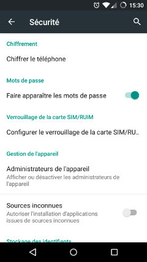
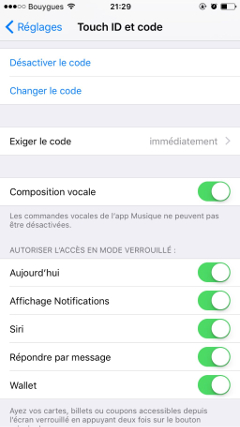
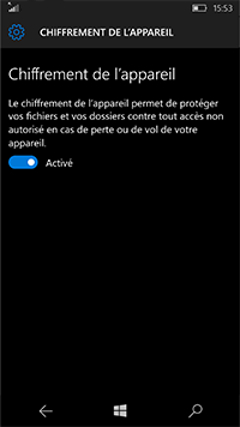
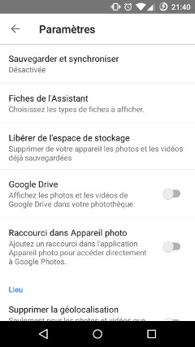
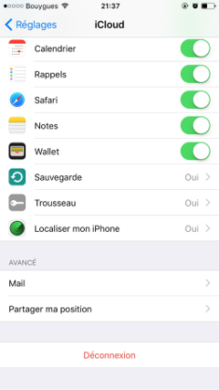
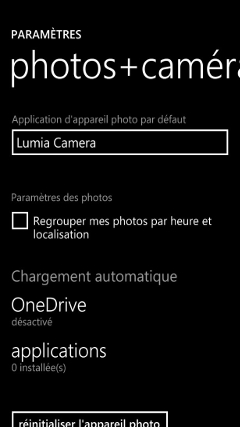
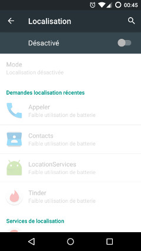
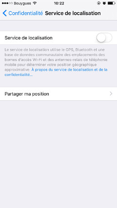
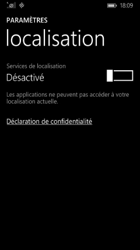

Chiffrage, au désespoir (de nos vieux ennemis)
Données personnelles, vie privée et sécurité #2
Mon smartphone contient une bonne partie de ma vie : mon agenda, mon répertoire, mes mails, pas mal de photos, un accès à mes comptes Twitter, Snapchat, Steam, Soundcloud, Flickr, GitHub, et j’en oublie sûrement. Aux États-Unis, il est même possible de payer physiquement avec son téléphone grâce à Android Pay ou Apple Pay, et ces solutions devraient arriver en France sous peu.
Bref, autant de raisons de vouloir sécuriser au maximum son smartphone. En plus, c’est hyper simple.
Bertrand Renard, si tu m’écoutes
Premier réflexe, chiffrer son smartphone. Comme ça en cas de perte, impossible d’extraire les données qu’il contient sans le dévérouiller avec la bonne passphrase.
  
Sur un téléphone Android, il faut se rendre dans le menu de configuration «Sécurité» et appuyer sur le bouton «Chiffrer le téléphone».
Sur iOs c’est tout aussi simple, voir encore plus transparent. Le chiffrement est activé d’office à partir du moment où le téléphone est vérouillé par un code. Direction donc le menu de configuration «Touch ID et code» (ou «Vérouillage par code») pour définir un code. La phrase «La protection des données est activée» devrait ensuite apparaître tout en bas de ce menu.
Et sur Windows Phone (depuis WP10) il y a dans le menu de configuration «Système» un sous-menu «Chiffrement du périphérique» qui servira de guide.
Des photos de nuages mais pas de nuages de photos
Second réflexe, désactiver la synchronisation automatique des photos vers le «cloud».
Ça évitera que des photos ne se retrouve n’importe où à cause de je ne sais quelle faille sur les serveurs d’Apple, Google ou Microsoft. En fait, ces serveurs je considère déjà un peu ça comme «n’importe où»…
  
Sur Android, direction le menu de configuration de l’application «Photos» pour y désactiver l’option «Sauvegarder et synchroniser».
Sur iOs c’est dans le menu de configuration «iCloud» que tout se passe.
Sur Windows Phone, il faut aller dans les paramètre de l’application «Photos» et désactiver «OneDrive» sous la mention «Chargement automatique».
En sauvegardant de temps en temps les photos sur un autre disque dur, tout devrait bien se passer.
Dé-localisation en masse
Un petit tour par l’historique des positions de Google Maps et tout le monde s’écrit «Mais c’est super flippant !». Du coup, troisième réflexe : désactiver les services de localisation.
  
C’est encore une fois super simple, il y a toujours un menu de configuration dont le nom ressemble à «Localisation» où un bouton désactive tout d’un seul coup.
Encore un jeu de mots sur le fait de chiffrer des lettres
Enfin, un smartphone ça sert avant tout à communiquer. Mais communiquer en clair c’est un truc de narvalo, surtout que c’est de plus en plus simple de chiffrer (c’est à dire rendre illisible à toute autre personne que l’expéditeur et le destinataire) messages et appels.
J’ai d’abord voulu aller voir du côté de SMSSecure. Étant donné que l’application n’est utilisable que sous Android, l’intérêt est limité (impossible de déchiffrer mes messages depuis un smartphone iOs ou Windows Phone).
Jusqu’à début avril (2016), Whatsapp souffrait du même problème et ne proposait du chiffrement bout en bout qu’aux périphériques Android. Qui plus est, Whatsapp est tout sauf open source.
Telegram est aussi une option, cette fois disponible sur toutes les plateformes. Pourtant, pas mal de monde emmet des doutes (par exemple ici, là, ici ou encore là) quant à la sécurité réelle qu’elle apporte.
Actuellement, Signal semble être la meilleure solution.
Une fois installée, l’application permet de communiquer (en texte et en voix) de façon chiffrée avec les autres personnes l’utilisant. Il est aussi possible de la configurer pour qu’elle remplace l’application de SMS par défaut. Comme ça, sont regroupés au même endroits les contacts valables (qui communiquent sainement) et les autres (qui parlent en clair, bâââh, caca, caca !).
Bon, je suis désolé, aucun support de Windows Phone n’est pour l’instant prévu.
Pour plus d’information, la page Secure Messaging Scorecard de l’EFF est très bien (mais en anglais).
En bonus : j’ai enfin le droit de tirer sur le messager
Un petit conseil que j’expliquerai plus en détails prochainement…